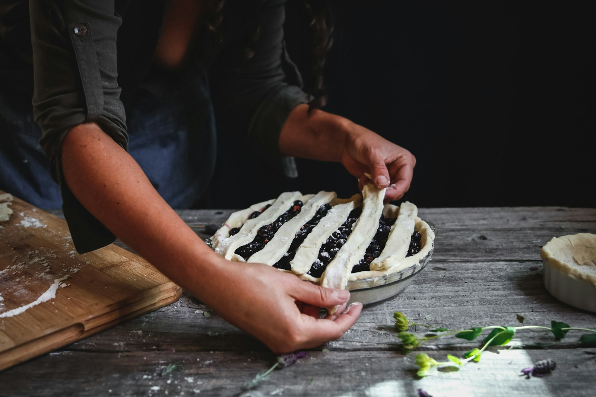
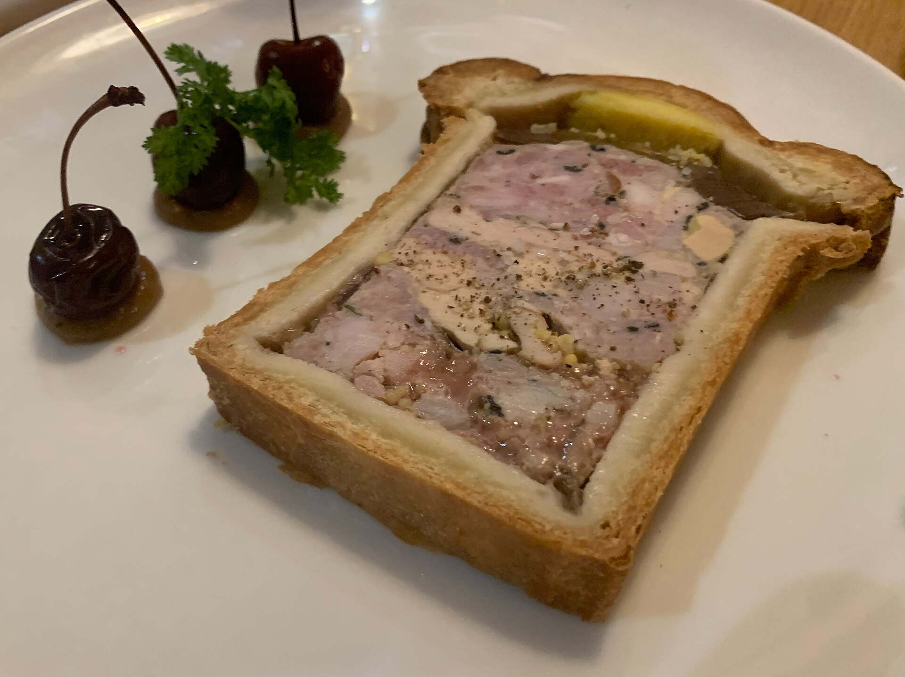
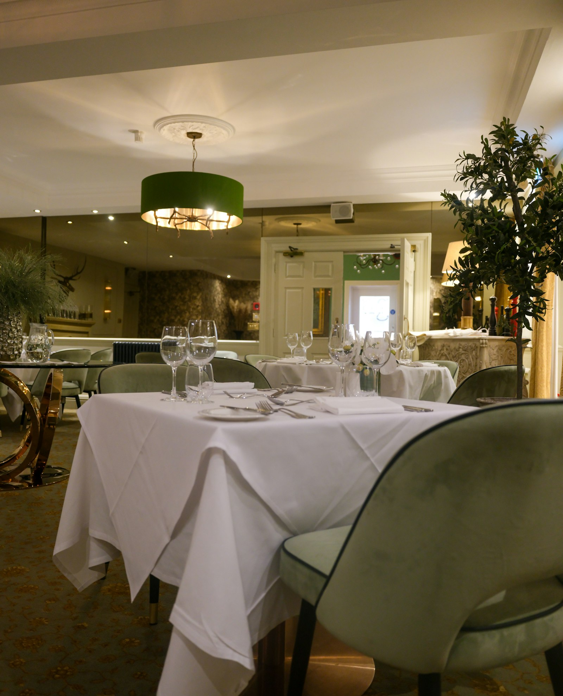
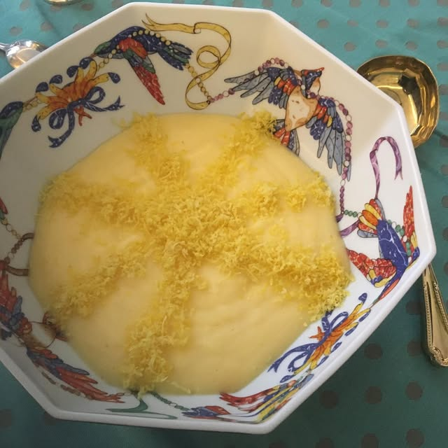
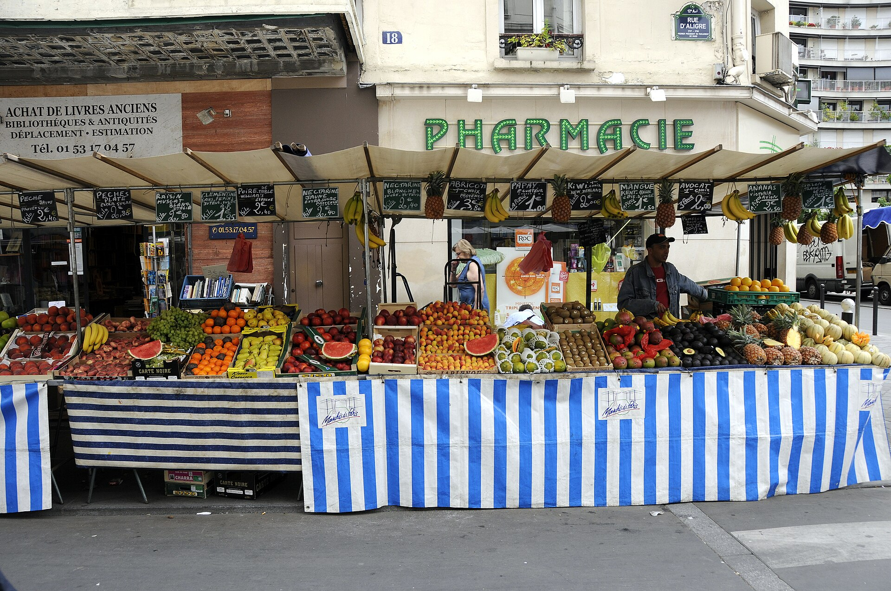

Six personnes, une cuisine du 7e arrondissement et une journée entière consacrée au pâté en croûte, aux quenelles de brochet ou au soufflé au Grand Marnier. Rien n'est préparé à l'avance.





La méthode
Ces ateliers sont construits autour des plats qui intimident : ceux qui comptent douze étapes, une température qui ne pardonne rien et une réputation de plat raté. On en prend un, on le décompose et on le fait correctement — y compris les étapes que la plupart des recettes passent sous silence.
Six personnes au maximum, chacune à son poste. Les ateliers se déroulent en français et en anglais. Vous repartez avec la recette, la technique et le dîner déjà partagé.
Les ateliers
Un plat monumental du début à la fin : pâté en croûte, homard à l'américaine, quenelles sauce Nantua. La journée entière sur une seule préparation, et la table pour finir.
On commence au marché à huit heures, on choisit le menu devant les étals et on cuisine ce qui méritait d'être acheté. L'atelier à prendre pour comprendre comment se décide une cuisine parisienne.
Votre groupe, votre menu, dans cette cuisine ou dans la vôtre. Construit autour de l'occasion : un anniversaire, une délégation, une famille de passage à Paris pour la semaine.
Calendrier
Les dates affichées peuvent ne pas être à jour. Écrivez-moi pour confirmer les disponibilités.
Qui vous reçoit
Trente ans dans les cuisines parisiennes, dont quinze à enseigner dans celle-ci. Formée au répertoire classique et fidèle à ce répertoire : les sauces, les pâtes, tout ce qui demande du temps et le mérite.
Les convives viennent du quartier et de bien plus loin. L'atelier se tient en français et en anglais, et personne n'est jamais resté spectateur au fond de la pièce.
Ce qu'on en dit
[Citation d'un invité à ajouter — uniquement un vrai retour, jamais rédigé par nous]
[Citation d'un invité à ajouter — uniquement un vrai retour, jamais rédigé par nous]
[Citation d'un invité à ajouter — uniquement un vrai retour, jamais rédigé par nous]
Réserver
Indiquez-moi la date qui vous intéresse et le nombre de convives. Je confirme dans la journée et vous transmets l'adresse, ainsi que ce que je dois savoir sur les allergies ou les régimes particuliers.